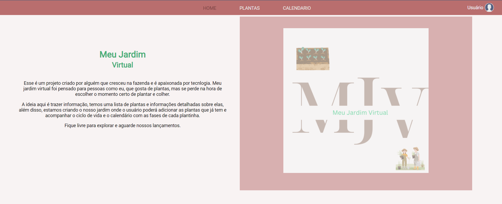
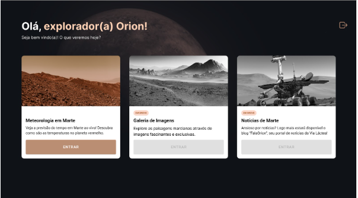
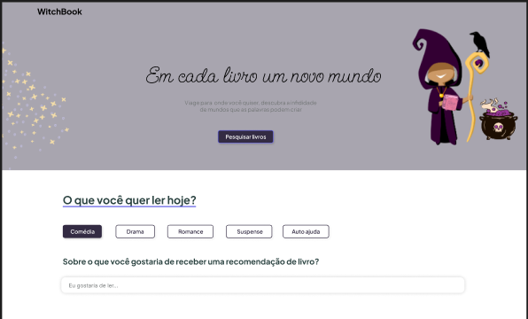
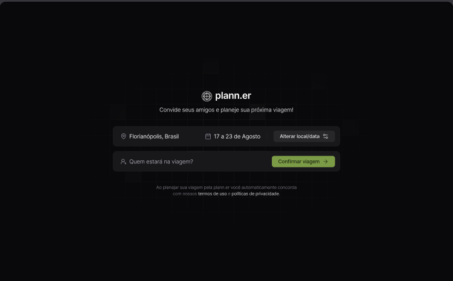

Engenheira de Produção que encontrou na tecnologia o espaço para aplicar análise, criatividade e inovação — automatizando processos, resolvendo problemas e criando soluções.
Atuo com desenvolvimento backend, mas minha trajetória começou antes do código.
Foi na engenharia que aprendi a enxergar processos, identificar gargalos e organizar soluções. Com o tempo, a necessidade de ir além do operacional me levou à automação — e, naturalmente, ao desenvolvimento.
Hoje, uno esses dois mundos no dia a dia: desenvolvo e mantenho sistemas, atuo na lógica e nos dados e resolvo problemas conectando tecnologia às necessidades do negócio.
Ao mesmo tempo, trago o olhar estruturado da engenharia para organizar demandas, automatizar fluxos e integrar áreas e dados de forma eficiente.
Também trabalho com análise e visualização de dados, criando dashboards que apoiam a tomada de decisão.
Mais do que apenas escrever código, meu foco é construir soluções que façam sentido na prática — organizadas, eficientes e pensadas de ponta a ponta.




Residente em Catalão-GO, disponível para mudanças e trabalho remoto.